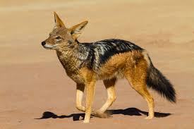
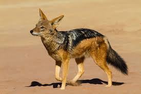
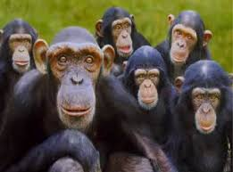
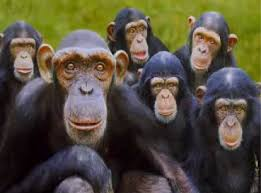

| |


 


 


Conservation is the practice of protecting wild plant and animal species and their habitats. The goal of wildlife conservation is to
ensure that nature will be around for future generations to enjoy and also to recognize the importance of wildlife and wilderness for
humans and other species alike.Many nations have government agencies and NGO's dedicated to wildlife conservation, which help to
implement policies designed to protect wildlife. Numerous independent non-profit organizations also promote various wildlife conservation
causes.
In 1972, the Government of India enacted a law called the Wild Life (Protection) Act. In America, the Endangered Species Act of 1973
protects some U.S. species that were in danger from over exploitation, and the Convention on International Trade in Endangered Species
of Fauna and Flora (CITES) works to prevent the global trade of wildlife, but there are many species that are not protected from being
illegally traded or over-harvested. The World Conservation Strategy was developed in 1980 by the "International Union for Conservation of
Nature and Natural Resources" (IUCN) with advice, cooperation and financial assistance of the United Nations Environment Programme (UNEP)
and the World Wildlife Fund and in collaboration with the Food and Agriculture Organization of the United Nations (FAO) and the United Nations
Educational, Scientific and Cultural Organization (Unesco).The strategy aims to "provide an intellectual framework and practical guidance
for conservation actions.
 ^_~
^_~
* Climate change: Global warming is making hot days hotter, rainfall and flooding heavier, hurricanes stronger and droughts more severe.
This intensification of weather and climate extremes will be the most visible impact of global warming in our everyday lives. It is also
causing dangerous changes to the landscape of our world, adding stress to wildlife species and their habitat. Since many types of plants
and animals have specific habitat requirements, climate change could cause disastrous loss of wildlife species. A slight drop or rise in
average rainfall will translate into large seasonal changes. Hibernating mammals, reptiles, amphibians and insects are harmed and disturbed.
and wildlife are sensitive to moisture change so, they will be harmed by any change in moisture level. Natural phenomena like floods,
earthquakes, volcanoes, lightning, forest fires .
* Unregulated Hunting and poaching: Unregulated hunting and poaching causes a major threat to wildlife. Along with this, mismanagement of
forest department and forest guards triggers this problem.
* Pollution: Pollutants released into the environment are ingested by a wide variety of organisms. Pesticides and toxic chemical being widely
used, making the environment toxic to certain plants, insects, and rodents.
* Perhaps the largest threat is the extreme growing indifference of the public to wildlife, conservation and environmental issues in general.[8]
Over-exploitation of resources, i.e., exploitation of wild populations for food has resulted in population crashes (over-fishing and
over-grazing for example).
| Name | Emerson Wildlife Conservancy |
|---|---|
| Address | Administration Office - Nairobi |
| Phone | +254728427263 +254718401711 +25573356287 |
Wildlife Conservancy | Private Policy